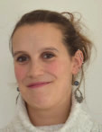

Notre équipe
Lisa De Noose, directrice du centre ALPHA
GSM : +32 (0)477 61 11 52
Licenciée et docteur en psychologie, formée en
psychothérapie d'orientation analytique et systémique, Lisa De Noose assure des consultations auprès
d'enfants,
adolescents, adultes et familles. Chargée de cours à l'Université de Mons, Lisa De Noose y assure
l'enseignement
des méthodes projectives et organise par ailleurs de nombreuses formations et supervisions à destination des
professionnels de la santé mentale.
Madison Bruyninckx
GSM
: +32 (0)498 02 53 25
Dotée d'un Master en psychologie clinique, Madison Bruyninckx reçoit les enfants
et
les adolescents en consultation. Elle prend en charge les difficultés de gestion des émotions, l'anxiété ou
la
dépression.
Wendy Carliez
GSM :
+32 (0)498 29 85 75
Titulaire d'un master en psychologie clinique et formée en psychothérapie
émotivo-cognitivo-comportementale, Wendy Carliez propose des consultations individuelles pour enfants,
adolescents et jeunes adultes. Elle se spécialise particulièrement dans la prise en charge des troubles
anxieux
et réalise également des bilans cognitifs et psychoaffectifs.
Camille Chapelle
GSM
:
+32 (0)494 52 16 24
Titulaire d'un master en psychologie clinique et psychopathologie, Camille Chapelle
bénéficie d'une expérience en service de santé mentale, en unité parents-bébé, en pouponnière et en service
résidentiel pour jeunes (SRJ) présentant des troubles sévères du comportement. Elle assure au sein du Centre
Alpha des consultations pour les jeunes enfants (0-3 ans), les enfants et les adolescents et mène des bilans
diagnostiques intellectuels et psychoaffectifs. De plus, elle se forme actuellement à la psychothérapie
psychanalytique et aux interventions cliniques.
Stéphanie Coolen
GSM
: +32 (0)472 60 69 33
Détentrice d’un Master en sciences psychologiques (enfant/adolescent), Stéphanie
Coolen est spécialisée dans le développement psychologique et les approches sur le traumatisme. Elle est,
entre
autre, formée à la Somatic Experiencing et au Modèle Relationnel Neuro-Affectif. Elle a une expérience
professionnelle avec l'autisme, le haut potentiel et dans un Service Résidentiel pour Jeunes avec des
problématiques de type caractériel.
Eloïse Esquiber
GSM :
+33 (0)6 74 48 61 46
Titulaire d’un Master en Sciences Psychologiques, Eloïse Esquiber est psychologue
d’orientation analytique au Centre Alpha. Elle accompagne enfants et adolescents en suivi thérapeutique et
réalise également des bilans psychoaffectifs et intellectuels afin de mieux comprendre leur fonctionnement,
éclairer les difficultés rencontrées et les aider à avancer sereinement.

Justine Hanot
GSM :
+32 (0)485 40 82 89
Licenciée en psychologie et diplômée en psychothérapie systémique, Justine Hanot
prend
en charge tant les familles et les couples en difficulté que les adolescents et adultes en individuel. Par
ailleurs, elle dispose d'une formation qui lui permet d'accompagner les personnes confrontées à un burn-out
parental.
Louise Hocquet
GSM
: +32 (0)492 55 76 69
Titulaire d’un master en psychologie clinique, Louise Hocquet se spécialise en
psychothérapie systémique. Elle accompagne enfants, adolescents, adultes et familles en proposant des suivis
thérapeutiques centrés sur les dynamiques relationnelles et familiales.
Delphine Kallai
GSM
: +32 (0)471 35 21 67
Psychologue et psychothérapeute d'orientation analytique et rogérienne, Delphine
Kallai assure des consultations individuelles avec des enfants, adolescents et adultes. Au sein du Centre
Alpha,
elle propose des bilans psycho-affectifs et des suivis psychothérapeutiques sur base de la thérapie par le
jeu
de sable.
Caroline Laurent
GSM
: +32 (0)475 67 66 14
Titulaire d'une licence en psychologie, Caroline Laurent est spécialisée en
psychothérapie d'orientation analytique et prend en charge tant les enfants, que les adolescents et les
adultes.
Elle mène également des bilans diagnostiques sur le plan intellectuel et psycho-affectif.
Marie-Christine Laurent
GSM : +32 (0)496 29 84 54
Psychologue et psychothérapeute d'orientation
analytique,
Marie-Christine Laurent assure des consultations avec les enfants, adolescents et adultes et ce, tant à des
fins
diagnostiques qu'à visée psychothérapeutique. Elle bénéficie également d'une expertise dans le champ
autistique.
Kacper Maczka
GSM
: +32 (0)492 84 53 88
Titulaire d'un Master en Sciences Psychologiques, Kacper Maczka est psychologue
clinicien d'orientation analytique jungienne (C.G. Jung). Il consulte auprès d'adultes et d'adolescents (en
français et en anglais). Son accompagnement est destiné à toute personne traversant une souffrance
psychique,
quelle qu'en soit la nature : anxiété, états dépressifs, manque de confiance en soi, sentiment de solitude,
crise existentielle, etc. Fondée sur le non-jugement et l'absence de catégorisation, sa pratique s'appuie
sur la
conviction profonde que chaque individu possède la capacité de se transformer et de trouver un sens à son
expérience.
Jean-Luc Pirard
GSM
: +32 (0)495 36 47 60
Licencié en communication sociale, Jean-Luc Pirard est formé en coaching
professionnel. À ce titre, il assure des bilans de compétences, et oriente tant au niveau scolaire que
socio-professionnel. Il accompagne également les personnes (pré)pensionnées dans leur bilan de carrière et
la
redéfinition de nouveaux projets.
Sarah Theunissen
GSM
: +32 (0)495 89 72 06
Détentrice d’un Master en psychologie et en sexologie clinique, Sarah Theunissen
accueille les adolescents, les adultes et les seniors, en individuel ou en couple. Elle propose également
des
séances d’hypnose. Ses domaines d’expertise tournent autour des difficultés relationnelles et sexuelles, des
traumatismes et d’estime de soi. Les valeurs de bienveillance, de respect et d’inclusion lui sont
particulièrement chères, ses consultations sont une safe place (LGBTQIA+ friendly).
Yliona Vandenbergen
GSM : +32 (0)494 28 11 05
Psychologue clinicienne et psychothérapeute
analytique spécialisée dans le développement de l’enfant et de l’adolescent. Yliona accompagne les enfants
et les adolescents dans leur processus de construction. Soucieuse de la dimension familiale, Yliona accorde
une importance à la collaboration avec les parents et en veillant à intégrer ceux-ci dans le processus
thérapeutique de leur enfant. Elle accompagne également les futurs et/ou jeunes parents dans leur processus
de parentalité ainsi que les adultes dans leur cheminement personnel. Elle propose également des bilans
intellectuels et psycho-affectifs.